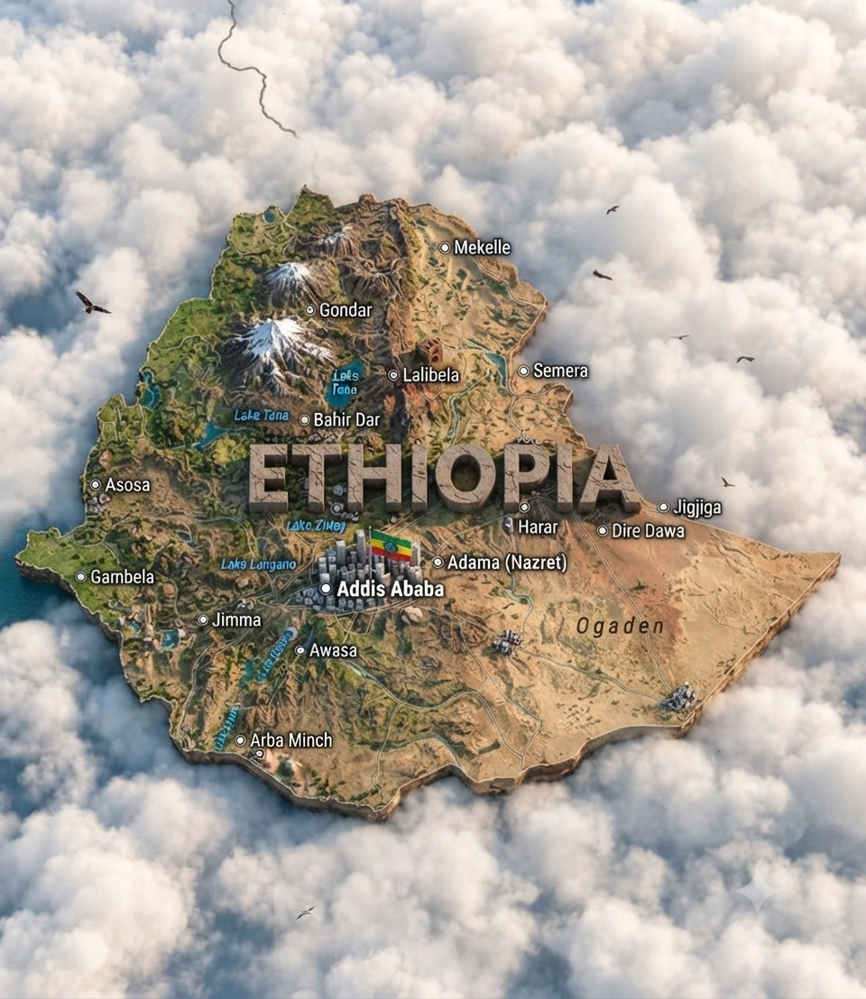
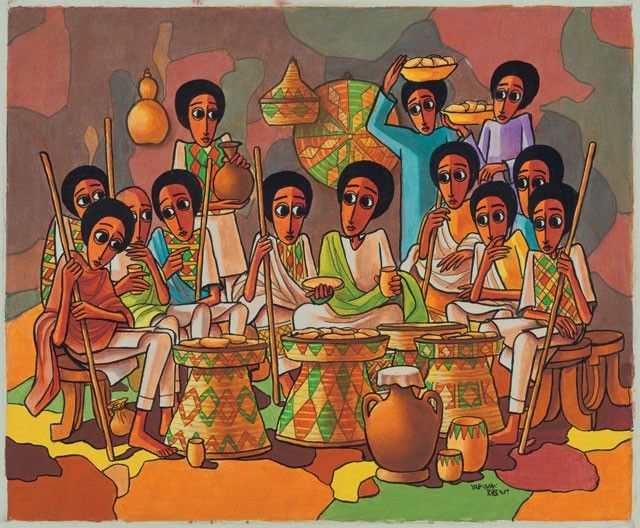
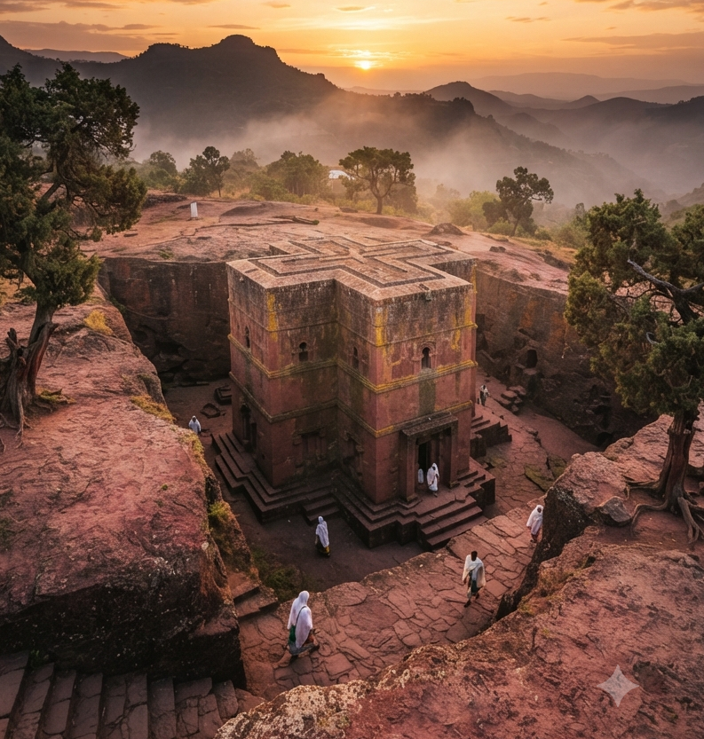
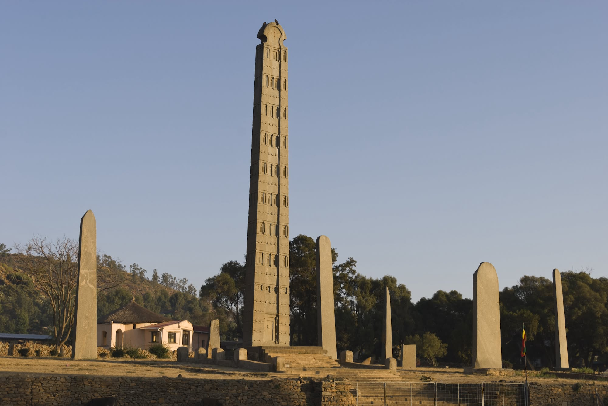
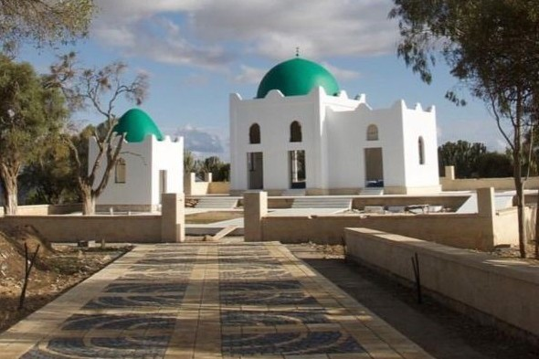
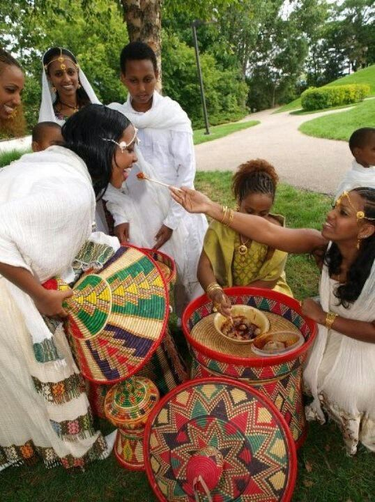

🌍
Horn of Africa
Ethiopia is located in the Horn of Africa and has a landscape ranging from high mountain areas to lower, warmer regions.
Explore the land, history, people, traditions, landscapes and food culture that make Ethiopia one of Africa's most diverse and fascinating countries.
Ethiopia is a country in the Horn of Africa known for its long history, diverse peoples and languages, distinctive landscapes, and strong traditions of community and hospitality.
From high mountain plateaus and fertile valleys to lakes, forests and dry lowlands, the country's geography is remarkably varied. These different environments have influenced the crops people grow, the foods they prepare and the traditions they pass from one generation to another.
Food provides one of the best ways to experience this diversity. A shared meal can bring family and friends together, welcome a guest, celebrate an occasion or simply create a moment for conversation.

A country where geography, history, culture and food are closely connected.
Ethiopia is located in the Horn of Africa and has a landscape ranging from high mountain areas to lower, warmer regions.
Ethiopia has a deep historical heritage that includes the ancient Aksumite civilization and remarkable architectural sites.
Many languages are spoken throughout Ethiopia, reflecting the country's rich cultural and linguistic diversity.
Ethiopia's geography is varied, and that variety is reflected in agriculture, ingredients and regional traditions.
The Ethiopian highlands include broad plateaus, mountain areas and fertile agricultural zones. Many communities have developed farming and food traditions around these environments.
Lakes and waterways form important parts of Ethiopia's landscapes and support communities, agriculture and ecosystems.
Grains, pulses, vegetables, spices and other crops contribute to the wide variety of foods found throughout the country.
Different climates and elevations allow communities to grow a wide range of crops that become important parts of local cooking traditions.

Ethiopia is home to many ethnic communities and languages. Oromo, Amharic, Somali, Tigrinya, Afar and many other languages are spoken across the country.
Traditions vary from place to place. Celebrations, clothing, music, dance, crafts and foods can all carry regional and community identities.
Traditional arts and crafts also form an important part of cultural expression. Weaving, pottery, basketry, embroidery and other forms of craftsmanship can be connected to local communities and everyday life.
Rather than one single Ethiopian culture, it is more accurate to think of Ethiopia as a collection of many connected cultures, histories and traditions.
Culture can be experienced through music, clothing, celebrations, crafts and community gatherings.
Music and dance are important parts of celebrations and gatherings. Different communities have their own rhythms, instruments, dances and performance traditions.
Traditional clothing can reflect local identity and is often worn during celebrations, religious occasions and important community events.
Handmade baskets, woven textiles, pottery and other crafts demonstrate skills that have been passed between generations.

Celebrations and community gatherings are important opportunities for people to spend time together, share food and express cultural traditions.
Music, dancing, special clothing and traditional foods can all become part of these occasions, creating memories that connect generations.
For visitors, experiencing these traditions respectfully can offer a deeper understanding of the communities and histories behind Ethiopian culture.
Ethiopia has a long and distinctive history. The ancient Kingdom of Aksum was an important regional power, and the country is home to remarkable historical and religious sites.
Lalibela is famous for its remarkable rock-hewn churches, while Aksum is associated with monumental stelae and the heritage of the Aksumite kingdom.
Ethiopia also has a rich tradition of manuscripts, architecture, religious art and written history. These traditions provide important windows into the country's past.
Historical places throughout the country show how architecture, religion, trade and local communities have shaped Ethiopia over many centuries.

Ethiopia's rich heritage can be seen in its ancient churches, monuments, castles and historic places of worship.

Lalibela is famous for its remarkable rock-hewn churches, carved directly into the ground and recognized as one of Ethiopia's most important historical and religious sites.

Aksum was the center of the ancient Aksumite kingdom and is known for its enormous stone stelae, archaeological sites and important historical heritage.

The Castle of Fasilides is part of the Fasil Ghebbi royal enclosure in Gondar. Its distinctive architecture reflects the rich history of the Ethiopian imperial era.

Al-Nejashi Mosque is a historic Islamic site in northern Ethiopia and is associated with the early history of Islam in the region.

Ethiopia has a famous coffee culture, and coffee plays an important role in social gatherings and hospitality.
The traditional coffee ceremony can turn preparing coffee into a shared experience. Beans may be roasted, ground and brewed as guests gather together.
The ceremony can create time for conversation, welcome and connection. It is not simply about drinking coffee; the process itself can be an important social experience.
Coffee preparation can become a meaningful social ritual.
Coffee beans are roasted as part of the ceremony, filling the space with their distinctive aroma.
The roasted beans are ground and brewed before being served to guests as part of the gathering.
Coffee provides an opportunity to sit together, talk, welcome guests and enjoy time as a community.
Ethiopian cuisine is closely connected to community and hospitality. Meals are often served on a shared platter, allowing everyone around the table to enjoy different dishes together.
Injera is closely associated with Ethiopian cuisine and is commonly served with stews, vegetables, legumes and meat dishes. Its soft texture makes it useful for picking up different foods from the shared platter.
Ethiopian cooking also uses a wide range of spices and aromatic ingredients. Berbere, mitmita, niter kibbeh, garlic and ginger contribute to the distinctive flavors found in many dishes.
From everyday meals to special celebrations, food can tell stories about family, place, tradition and community.



Ethiopian cuisine is especially interesting because meals can combine strong spices, slow-cooked sauces, grains, legumes, vegetables and breads in many different ways.
Regional cooking adds even more variety. Ingredients and preparation methods can differ between communities, creating dishes with their own flavors and identities.
Food can also be connected to holidays, religious traditions, family gatherings and everyday routines. A meal is often an opportunity to spend time together rather than simply something consumed quickly.
From breakfasts and snacks to large shared platters, food tells stories about place, family, community and celebration.
Sharing food is one of the simplest ways people create connection and welcome others.
Hospitality is an important social value in many Ethiopian communities. Guests may be welcomed with food, drinks and conversation.
Eating from a shared platter encourages people to sit together, talk and enjoy different dishes as a group.
Food can create moments of connection between relatives, friends, neighbors and guests.
Ethiopian food is only one part of a much bigger story. Behind every dish are landscapes, ingredients, families, communities, celebrations and traditions. Exploring the food can therefore be a way of exploring the people and places that created it.
We hope this little journey helps you discover Ethiopia beyond the plate — one story, one tradition and one delicious meal at a time. 🇪🇹
Explore the recipes for dishes you can cook, or visit the gallery for foods, drinks, breads, snacks and ingredients.
Explore Recipes Visit Gallery